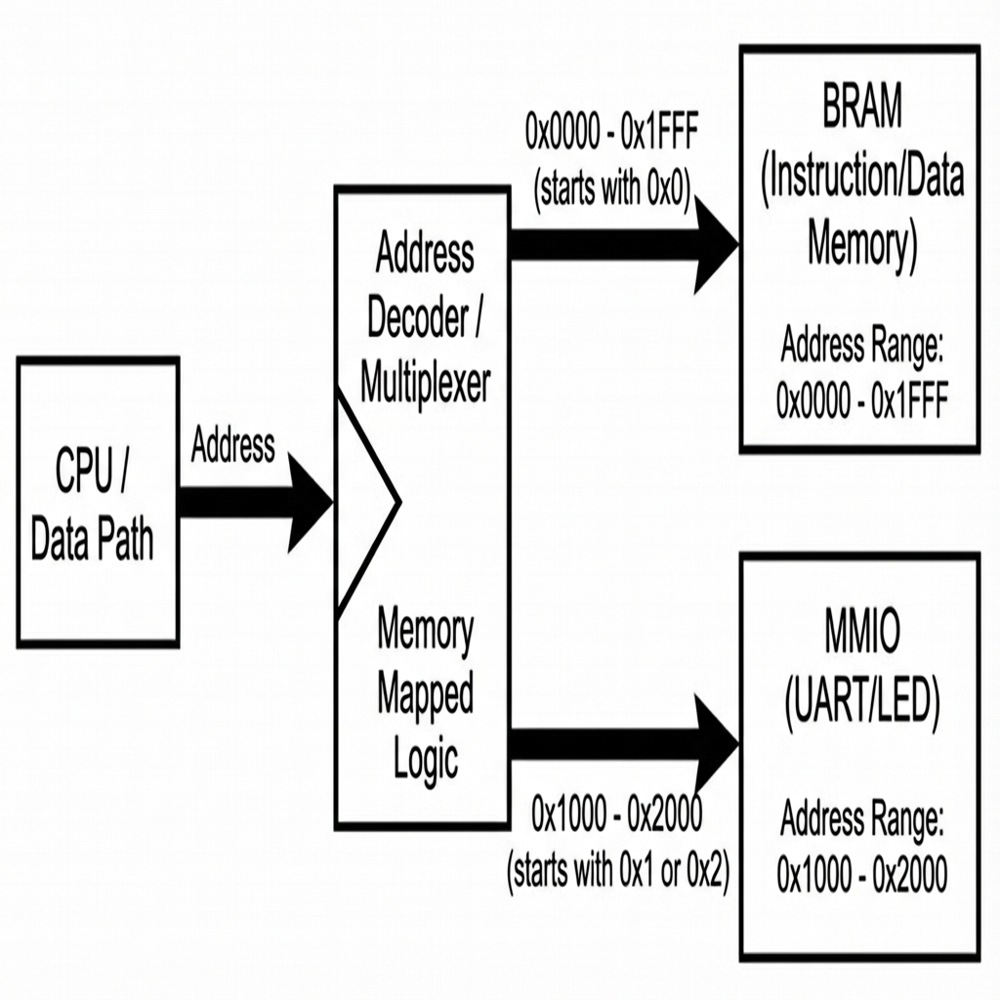
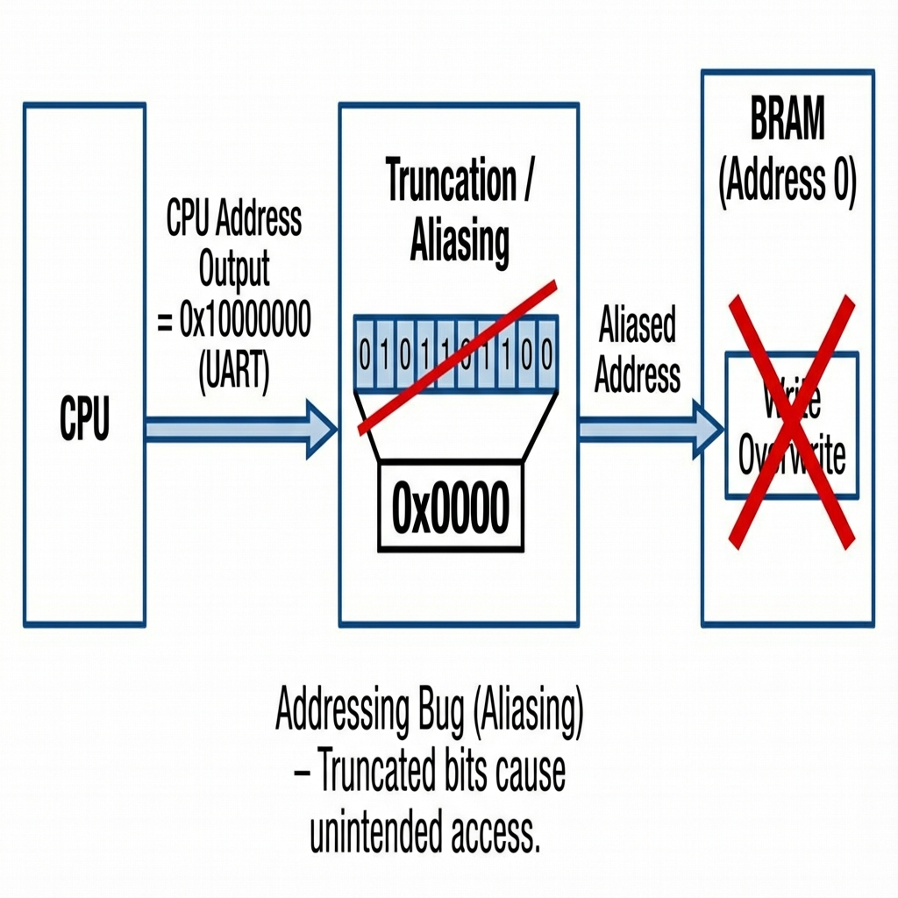
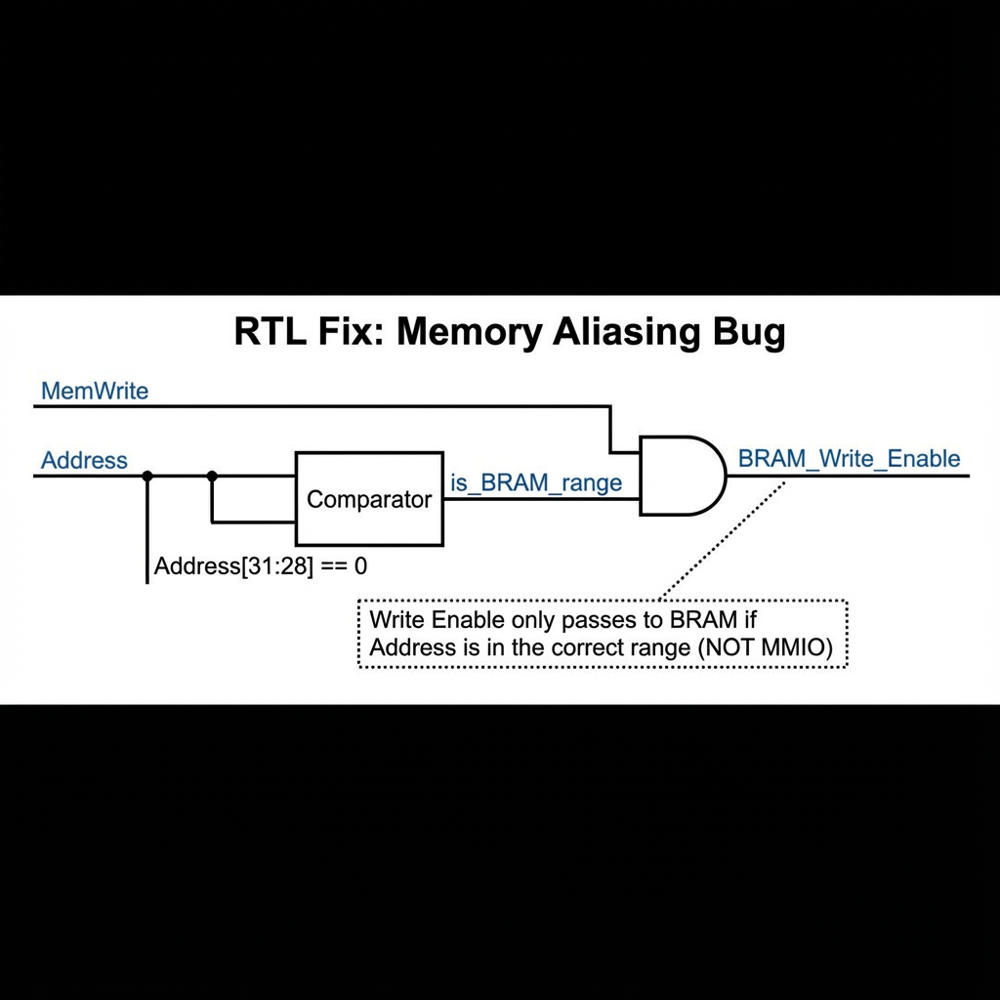

RISC-V 시스템 RTL 분석 보고서
UART 통신 오류 진단 및 해결
Nexys A7 FPGA 프로젝트 분석 결과
(키보드 방향키 또는 아래 버튼으로 이동하세요)
1. 프로젝트 개요 및 문제점
목표: Nexys A7 보드에서 5단계 파이프라인 RISC-V CPU를 구현하여 입출력(UART, LED) 제어.
구성 요소:
top.v: 시스템 최상위 모듈data_path.v: CPU 코어 및 메모리(BRAM) 내장uart.v: 물리 계층 드라이버
현재 상태:
- FPGA 단독 테스트 (IO 루프백): 정상 작동
- CPU 통합 시: 통신 실패 (UART 먹통 현상)
2. 의도된 데이터 흐름 (설계 의도)
주소가 0x1...로 시작하면 UART로 가고,
주소가 0x0...으로 시작하면 BRAM(메모리)으로 가야 합니다.

3. 근본 원인: "조용한 충돌 (Silent Crash)"
메모리 주소 앨리어싱(Aliasing) 버그:
UART 주소에 쓸 때, 의도치 않게 BRAM에도 쓰기가 발생합니다.

4. 소스 코드 상세 분석 (문제점)
data_path.v의 메모리 인스턴스화 부분에서 주소 필터링이 누락됨:
// data_path.v (Lines 237-242)
blk_mem_gen_0 bram (
...
// 치명적 버그 (CRITICAL BUG):
// .web 신호가 단순히 "쓰기 명령인가?"만 확인합니다.
// "이 주소가 정말 메모리 주소인가?"를 확인하지 않습니다.
.web({4{EX_MEM_mem_write}}),
// 주소 잘림 (Address Truncation):
// 0x10000000 (UART) -> 하위 비트만 보면 0x000 (부트 코드)
.addrb(EX_MEM_ALU_out[12:2]),
...
);
결과: UART 전송 시도 시, 부트 코드가 덮어씌워져 CPU가 멈춤!
5. RTL 수정 논리 (제안)
쓰기 활성화 신호(Write Enable)를 통제해야 합니다.
주소가 입출력(MMIO) 영역이 아닐 때만 메모리에 쓰도록 수정합니다.

6. 수정 로드맵: 코드 구현
data_path.v를 다음과 같이 수정하여 해결할 수 있습니다.
// 1. MMIO 영역 감지 로직 추가
// 주소의 상위 비트([31:28])가 0이 아니면(0x1..., 0x2...) 입출력 영역임.
wire is_mmio = (EX_MEM_ALU_out[31:28] != 4'b0000);
// 2. BRAM 인스턴스 수정
blk_mem_gen_0 bram (
...
// 수정: 입출력 영역이 아닐 때만(!is_mmio) 쓰기 허용
.web( {4{EX_MEM_mem_write && !is_mmio}} ),
...
);
(이렇게 하면 UART에 쓸 때 메모리를 건드리지 않습니다)
요약 및 결론
- CPU 내부 로직은 정상입니다.
- UART 모듈도 정상입니다.
- 원인: CPU와 메모리를 연결하는 로직에서 주소 확인이 빠짐.
- 해결:
!is_mmio 조건을 추가하여 메모리 오염 방지.